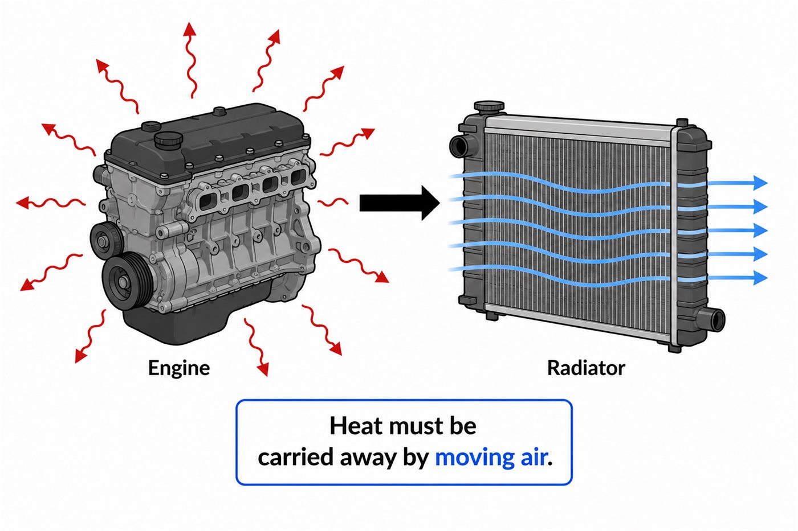
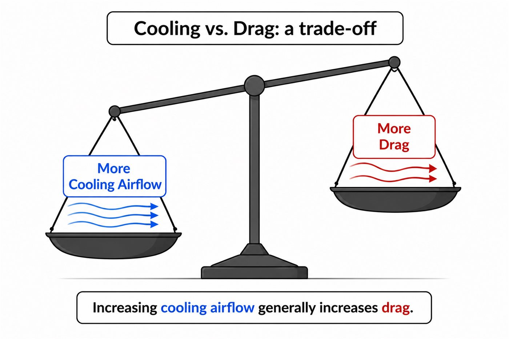
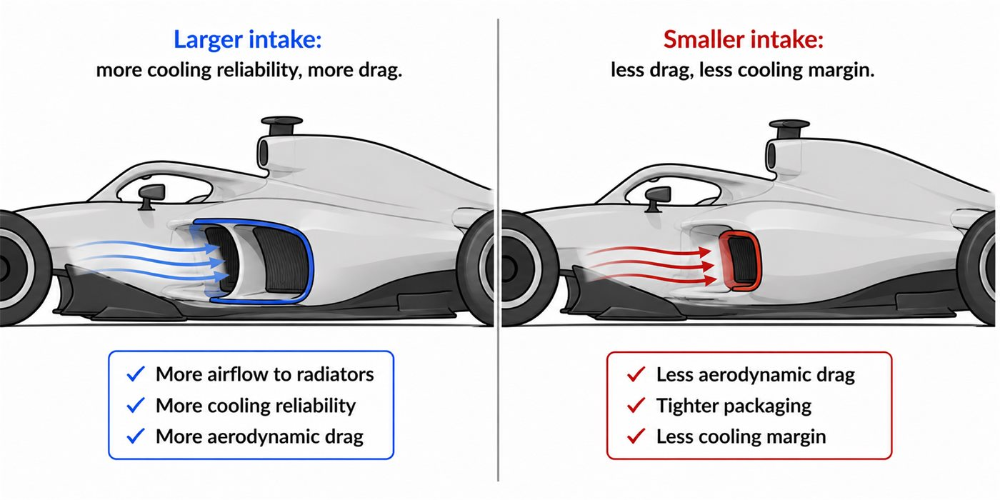

01 - KEEP IT ALIVE
Why a race car needs cooling
Engines, electronics and other systems create heat. That heat has to leave the car reliably.
Radiators use moving air to carry heat away. More airflow through the cooling system can improve reliability, but it usually costs aerodynamic performance.

02 - THE TRADE-OFF
More cooling air usually means more drag
Air intakes are openings in the bodywork. They feed radiators, but they also interrupt smooth external airflow. That is the core cooling-versus-drag compromise.

03 - SIDEPODS
Intake size is a design decision
A larger intake gives more cooling margin but usually more drag. A smaller intake can be cleaner aerodynamically, but leaves less safety margin in hot conditions or long high-load running.

04 - OPTIONAL 3D MODELS
Look at radiator hardware
These models help students connect the diagrams to real parts. They are click-to-load so the page stays fast.
Your browser cannot display the interactive model.
Model credit: Car radiator by flow3d, licensed under CC BY 4.0. Additional radiator asset included locally: RADIATOR by VR DESIGNER, CC BY 4.0.
05 - PACKAGING
Everything must fit inside the smallest useful shape
Packaging means fitting engine, cooling ducts, fuel system, electronics and structures inside a body shape that still works aerodynamically. Every space claim becomes a compromise.
06 - ENGINEER MINDSET
This is trade-off thinking in a new domain
Cooling is not “just more air.” It is enough cooling, with acceptable drag, packed into a shape that still supports the rest of the aero package.
Teams may open cooling for reliability.
Lower drag can be very valuable.
Can improve airflow to the floor and rear.
GO DEEPER
Books worth opening
Competition Car Aerodynamics - Simon McBeathCooling integration and aerodynamic impact.
Race Car Aerodynamics - Joseph KatzCooling airflow as part of whole-car aero design.
Introductory heat transferConvective cooling explains why moving air removes heat.
Finished this lesson? Mark it as complete to track your progress.